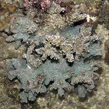
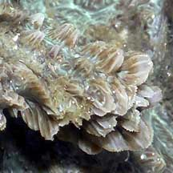
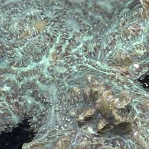
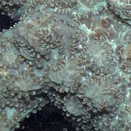
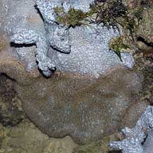
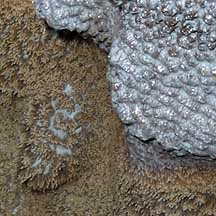
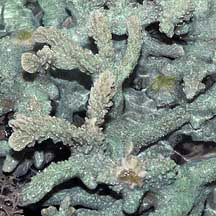

|
|
| hard corals text index | photo index |
| Phylum Cnidaria > Class Anthozoa > Subclass Zoantharia/Hexacorallia > Order Scleractinia > Family Merulinidae > Hydnophora sp. |
| Branching
horn coral Hydnophora rigida* Family Merulinidae updated Nov 2019 Where seen? This hard coral with conical bumps and forming branching colonies is sometimes seen on some of our undisturbed Southern islands. Features: Colonies (15-20cm) bushy. An open tangle of thick, short cylindrical branches, often arising from an encrusting base. The unique feature of these Hydnophora corals are the small conical mounds (0.5cm or smaller), called monticules (also hydnae or hydnophores), that form where the corallite walls of adjacent polyps fuse together. Polyps have short blunt tentacles that surround the base of each monticule. The tentacles that are usually extended only at night. Colours seen include blue and brown. |
 Raffles Lighthouse, Jun 07 |
 Conical mounds called monticules |
. |
|
 Monticules often fused into ridges forming short valleys. |
 Tentacles around the mounds. |
*Species are difficult to positively identify without close examination.
On this website, they are grouped by external features for convenience of display.
| Branching horn corals on Singapore shores |
On wildsingapore
flickr
|
| Other sightings on Singapore shores |
 Sisters Island, Jul 04  |
 Raffles Lighthouse, Jul 06  |
|
Links
|